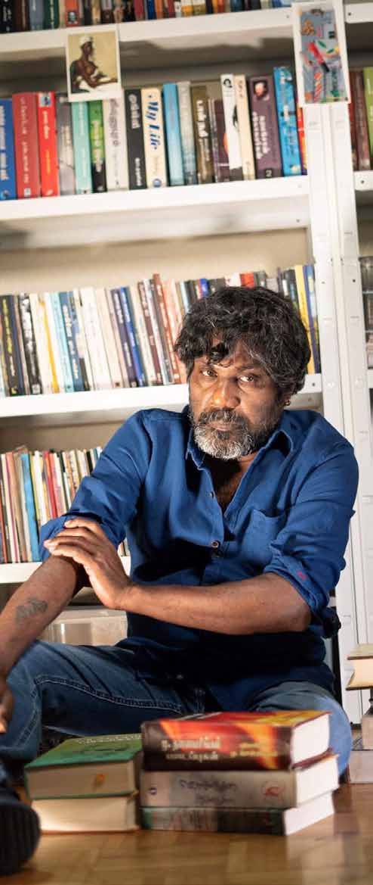
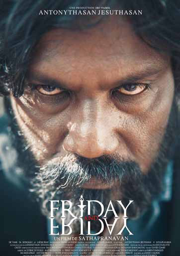
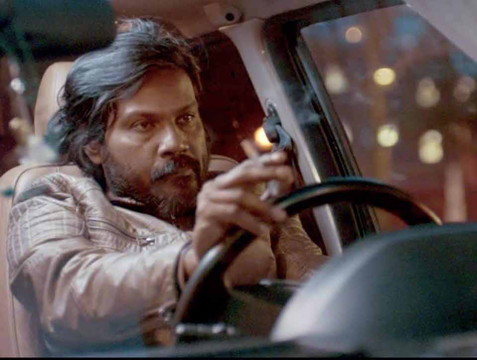

this, but I would like to hear it in your own words.
this, but I would like to hear it in your own words.
Jaffna Monitor hellojaffnamonitor@gmail.com 8 this, but I would like to hear it in your own words. As you know, I am very passionate about acting. During my teenage years, I was deeply captivated by the acting skills of South Indian film actress Shoba. Her performances in movies like 'Pasi', 'Moodupani', and 'Azhiaatha Kolangal' were particularly enchanting to me. The first part of my pseudonym is a tribute to her name. The second part, 'Sakthi', was inspired by the poem 'Solladi Sivasakthi' by the esteemed poet Subramania Bharathi, which resonated strongly with me. Despite the LTTE's significant influence and Prabhakaran's adulation during a crucial period for Sri Lankan Tamils, you remained critical, especially of their violent tactics. How did you foresee their eventual downfall at Mullivaikal when they were at their peak? There are several reasons. Due to the fascist actions of the Tigers, they became alienated from the people. Especially after the 1990s, they completely abandoned the qualities of a liberation movement, and Prabhakaran turned into merely a warlord. The Tigers desired war until the end. People, weary from the war, did not want it. If the people had desired war, the Tigers would not have had to engage in forced conscription, nor would there have been a need to implement a pass system to prevent people from leaving the northern areas. The conflict with the Indian Army, culminating in the assassination of Rajiv Gandhi, were key military factors that led to the downfall of the Tigers. After the 2001 Twin Towers attack in America and the changing global situation, I believed that these would accelerate the demise of the Tigers. The separation of Eastern Province fighters from the mainland LTTE also militarily weakened the Tigers. These various reasons were the basis for my prediction of the Tigers' downfall. Following the 1983 ethnic riots, numerous militant groups emerged, a theme you explore in your short story 'The F group'. Amidst the formation of these various movements, what led you to choose the Liberation Tigers of Tamil Eelam (LTTE)? Weren't the Tigers fascists at that time? Or did you not have the life experience to recognize that fascism? Or did you join the Tigers due to a compulsion to be part of some movement? The ethnic cleansing and oppressive tactics unleashed by the Sri Lankan chauvinistic government against the Tamil people were what spurred me to join the struggle for the liberation of Tamil Eelam. Among the movements that fought for Tamil Eelam's liberation, the Tigers' was actively and extensively involved in armed struggle, which led me to join them. I was 16 when I joined the Tigers and 19 when I left. At that age, I did not have the political understanding to realize the movement's true nature. Why did you leave the Tigers organization? While you were a member, wasn't it necessary to take responsibility for the organization's fascist actions based on the concept of 'collective consciousness'?
Jaffna Monitor hellojaffnamonitor@gmail.com 9 The primary reason for leaving the Tigers organization was the tyrannical environment within the organization. Power was concentrated in the leadership, and we, as fighters, were led like flocks of sheep. I definitely accept responsibility for the mistakes made by the movement during the time I was active in it, based on collective conscience. In an interview, you mentioned, "I was not merely an observer of the war; I actively participated in its unfolding. I persuaded my friends to join the movement, only to see them perish." How will you escape the guilt of this? I cannot escape that guilt until my death. You've said in an interview that facing trouble for your writing is an intimidation against a writer, not oppression against a fighter. You've moved past seeing yourself as a fighter, considering it an insult to true fighters. Yet, you've often identified as a child soldier, haven't you? In that interview, I said, 'I am not a fighter now.' This does not mean

Jaffna Monitor hellojaffnamonitor@gmail.com 10 to hide the fact that I was a fighter in the LTTE in the past. In the early days of my writing, I had the notion of being a left-wing fighter. This belief was strengthened when I worked with the Trotskyist organization Fourth International' after coming to France. However, in recent times, I haven't been involved in any organizational work. I haven't found a political organization that aligns with my beliefs. Therefore, I focus only on my art and writing. So, I am not a fighter now. You've said, 'I don't oppose a nonexistent LTTE. I've moved on and now mock rather than seriously engage with those carrying the Tigers' ideology.' But considering the Tigers' ideology still exists, isn't it important to question its origins? I believe that the basic ideology of the Tigers has been completely abandoned by their political supporters now. Nobody is putting forward the demand for an independent country anymore. This doesn't mean they have shifted to progressive politics; rather, they are involved in a different kind of worse politics. The Canadian Tamil Congress is an excellent example of this. You are well-known for your strong critique of the caste system among Sri Lankan Tamils. In your view, what is the actual state of the caste dynamics in the regions inhabited by Sri Lankan Tamils? The direct oppression and caste discrimination experienced by Sri Lankan Tamils during the 1960s and 70s have decreased, but they have not disappeared. The movement against untouchability significantly broke down the barriers of the caste system. The armed struggle has created a rupture in the caste structure and in the political and social contributions of women. However, casteism, as a cultural and customary practice, is still deeply entrenched in the psyche of the dominant castes. Direct untouchability and caste-based discrimination remain widespread. Moreover, these practices are still prevalent there. In educational institutions, religious organizations, media, and alums associations, the mindset of the dominant caste and the ostracization of Dalits continue to occur. This has even spread to the diaspora also. Some staunch Tamil nationalists claim that there is no casteism in the Tamil-inhabited areas of Sri Lanka now and that stories about Movie poster of Shobasakthi's 'Friday And Friday'

Jaffna Monitor
hellojaffnamonitor@gmail.com
11
casteism are unnecessary. What's
your view on this? Do you think
casteism and Tamil nationalism are
intertwined?
I don't think that casteism and Tamil
nationalism are intertwined in an ideological
sense. Before our times, Dravidian movement
leaders in Tamil Nadu, who once advocated for
an independent state while emphasizing Tamil
nationalism, were also intensely involved in
the abolition of caste. Periyar E.V. Ramasamy
argued that the demand for an independent state
was primarily based on Brahmin dominance in
the central government.
I believe that casteism is intricately linked
with Hinduism, a view also shared by Dr B.R.
Ambedkar, who, after extensively studying
the caste system, proclaimed, "I will not die a
Hindu," and embarrassed Buddhism.
Our national liberation movements have indeed
been indifferent to caste eradication. They
opportunistically thought that emphasizing the
abolition of the caste system would detract from
their national liberation struggle. However, no
national liberation movement was built on
caste foundations.
However, strong caste currents within electoral
parties like the Tamil United Liberation Front
and the Ilankai Tamil Arasu Kachchi were
evident.
At the same time, these caste inequalities were
also present among electoral parties other than
Tamil nationalist parties. Even the Communist
parties cannot escape this accusation. In the
